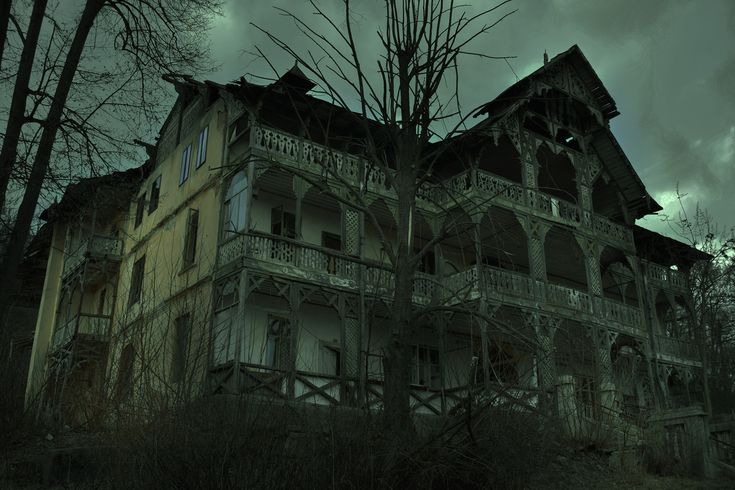
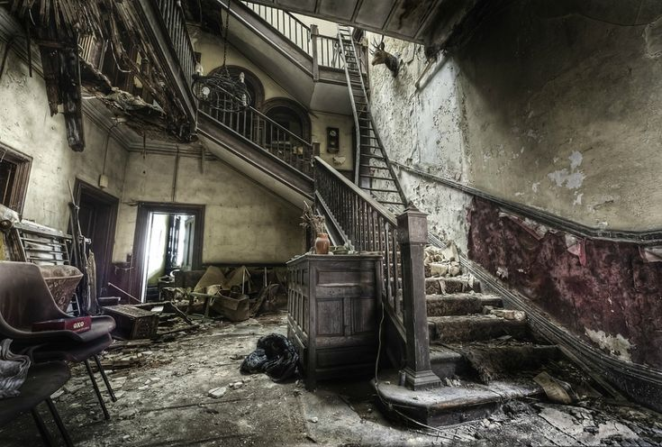
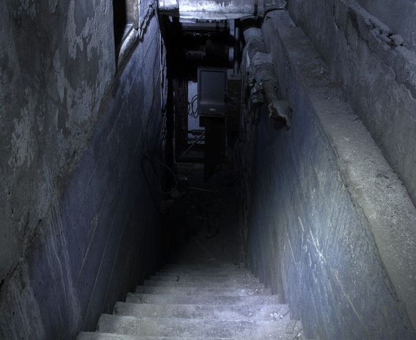

&r1ck c
Muito antes de você, ela já existia. Viajando pelo espaçotempo, sempre à procura daqueles que desejam provar sua coragem e enfrentar desafios, ela esteve presente por séculos. Agora, ela pode aparecer na sua rua. Se tiver coragem, venha e entre na Casa dos Mistérios. Quatro amigos, em uma tarde qualquer, saem em busca de diversão e acabam se afastando um pouco da cidade. Durante a caminhada, deparam-se com uma casa misteriosa, que nenhum deles lembra de ter visto antes. Curiosos e intrigados, eles discutem suas opções

Ao entrarem na casa e começarem a explorar o salão de entrada, algo estranho e assustador acontece. De repente, a casa inteira começa a tremer, como se estivesse no meio de um terremoto. As paredes parecem se contorcer, e a visão dos amigos fica turva, como se a realidade ao redor estivesse se desfazendo. Então, tão inesperadamente quanto começou, o tremor cessa. Mas quando tentam sair, descobrem que as portas estão trancadas. Ao olharem pela janela, percebem que o mundo exterior desapareceu, deixando apenas um vazio infinito ao redor da casa.Ainda assustados, havia um consenso racional entre eles de que precisavam explorar a casa em busca de uma saída. Agora, precisavam decidir:
Talvez você tenha feito a escolha mais segura, mas acaba de perder a maior aventura da sua vida fim.
Decididos a ficarem juntos, os amigos começam a explorar o andar em que estão. Enquanto avançam pelos corredores sombrios, percebem que a casa está cheia de sinais de que outras pessoas já estiveram ali. Mensagens assustadoras estão rabiscadas nas paredes, como avisos desesperados de quem tentou sair antes deles: "Não confie na casa", "Ela conhece seus medos", "Sem saída".Apesar da atmosfera tensa, eles não encontram nada de realmente perigoso ou importante nesse andar. Com o coração ainda acelerado e um pressentimento de que a verdadeira ameaça está em outro lugar, os amigos decidem se dividir em duplas para cobrir mais terreno. Agora, precisam escolher:
Os amigos, apesar do medo, decidem que a melhor forma de encontrar uma saída é se separando. Cada um segue por um caminho diferente, acreditando que assim terão mais chances de descobrir algo útil. Com o coração acelerado e a tensão crescente, eles partem sozinhos, explorando os corredores escuros e silenciosos da casa.À medida que avançam, cada um começa a perceber sinais de que outras pessoas já estiveram ali. Mensagens escritas nas paredes revelam o desespero dos que vieram antes: "Não confie na casa", "Ela conhece seus medos", "Sem saída". Essas palavras ecoam na mente dos amigos, aumentando a sensação de perigo iminente.Mesmo assim, eles não encontram nada de realmente perigoso ou importante neste andar. A casa parece brincar com eles, como se os estivesse testando. Depois de explorar o que podem, todos se reúnem novamente, ainda sem uma solução clara. Com o pressentimento de que a verdadeira ameaça está em outro lugar, decidem que o próximo passo é explorar as áreas que ainda não visitaram.

A dupla que desceu para o porão avança com cuidado, tentando iluminar o caminho com suas lanternas. O ambiente é sombrio e úmido, e o ar está carregado de uma sensação de desconforto. Eles encontram vários objetos antigos e cobertos de poeira, mas nada que pareça relevante. No entanto, uma sombra estranha se move nas paredes, criando formas assustadoras com a luz das lanternas.De repente, a sombra ganha uma forma mais definida e começa a se aproximar de um dos amigos. A f igura parece tomar vida e se estende, agarrando o amigo e puxando-o para uma área mais escura do porão. O amigo grita de medo e dor, tentando se soltar, mas a sombra o segura com força.Agora, a situação se torna crítica. A dupla precisa tomar uma decisão difícil:
a dupla que explorou o andar superior encontra um cômodo que parece diferente dos demais. É uma sala com paredes cobertas por velhas tapeçarias e móveis empoeirados. No centro da sala, há uma porta escondida atrás de um pesado cortinado. Quando um dos amigos se aproxima e examina a porta, percebe que ela está ligeiramente entreaberta, revelando um corredor que parece levar para fora da casa. Na porta, há uma mensagem escrita com tinta vermelha: "Só um pode passar."A descoberta traz um misto de esperança e preocupação. Há a possibilidade de que essa seja a saída que eles tanto procuravam, mas a mensagem indica que apenas uma pessoa pode atravessar o corredor. Agora, o amigo que encontrou a porta deve decidir:
Ao descer para o porão, um dos amigos cai em um poço sem fim. Desesperado, ele tenta se agarrar às bordas do poço enquanto o outro amigo se aproxima para ajudar. Agora, você precisa decidir:
Eles encontraram uma possível saída e, temendo que a situação pudesse se complicar ainda mais, decidiram não contar aos dois amigos que estavam no porão. Com a esperança de escapar sozinhos, passaram pela porta e seguiram pelo corredor. No entanto, a casa não deixou de pregar uma peça. De repente, as paredes começaram a se fechar, e a realidade ao redor deles começou a distorcer. As mensagens assustadoras nas paredes se tornaram mais intensas e claras, lembrando-os de que lealdade é crucial. Eles perceberam que a casa estava testando sua amizade e o valor de sua decisão. Sem uma verdadeira saída, a casa os fez enfrentar a realidade de que sua escolha de não compartilhar a descoberta teve consequências graves.
Ao voltar do porão sem o amigo, ele não encontra mais a casa como era antes. A casa agora parece uma sombra sombria e ameaçadora no meio da sala. A sombra fala com uma voz fria e acusadora: "Você deveria ter me salvado." A casa, agora imersa em um ambiente opressivo, ecoa a mesma mensagem, reforçando o sentimento de traição. Desesperado e em choque, ele tenta encontrar uma saída, mas a casa, agora um ente implacável, o envolve e o leva para o mesmo destino sombrio do amigo. Sem escapatória, ele também perece, mostrando que a falta de lealdade tem suas consequências fatais.
Ajudar sempre é bom porém as vezes você paga por isso , fim.
Ao entrar pela porta e seguir pelo corredor, ele percebe que as paredes começam a se fechar lentamente, tornando o espaço cada vez mais apertado. As vozes ecoam ao seu redor, acusando-o: "Você deveria ter avisado eles." À medida que o corredor se comprime, a sensação de claustrofobia e desespero aumenta. Sem uma saída visível e com as vozes se tornando cada vez mais intensas, ele se torna parte da casa, fundindo-se com a estrutura e se transformando em mais um dos muitos que a casa engoliu ao longo dos anos.
Quando a casa percebe o ato de lealdade e sacrifício, ela reage de maneira inesperada. Em um momento de silêncio tenso, a atmosfera muda e as paredes começam a se afastar lentamente. As vozes acusadoras diminuem, dando lugar a uma sensação de alívio. A casa, reconhecendo a lealdade demonstrada, decide libertar os amigos que ainda estão presos. Eles encontram a saída finalmente aberta diante deles. Em um final surpreendente, a casa deixa claro que a verdadeira lealdade e a solidariedade foram a chave para a sobrevivência, permitindo que eles escapem e retornem ao mundo real.
Ajudar sempre é bom porém as vezes você paga por isso , fim.
Ao voltar do porão sem o amigo, ele não encontra mais a casa como era antes. A casa agora parece uma sombra sombria e ameaçadora no meio da sala. A sombra fala com uma voz fria e acusadora: "Você deveria ter me salvado." A casa, agora imersa em um ambiente opressivo, ecoa a mesma mensagem, reforçando o sentimento de traição. Desesperado e em choque, ele tenta encontrar uma saída, mas a casa, agora um ente implacável, o envolve e o leva para o mesmo destino sombrio do amigo. Sem escapatória, ele também perece, mostrando que a falta de lealdade tem suas consequências fatais.